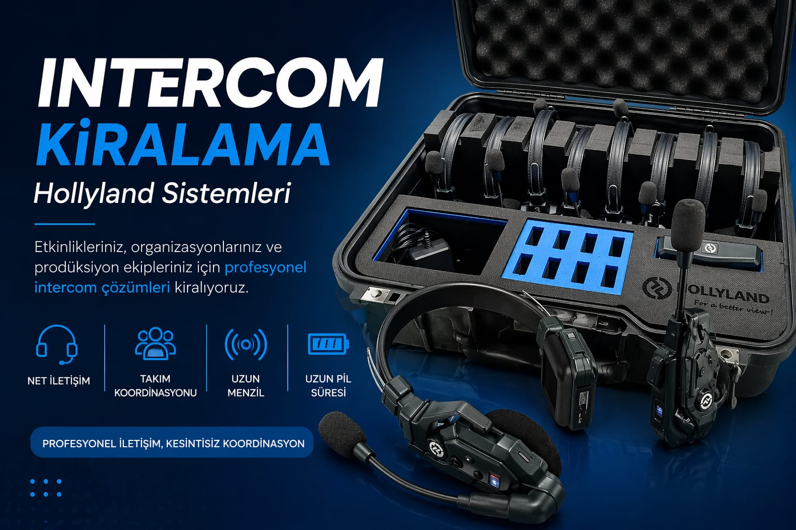
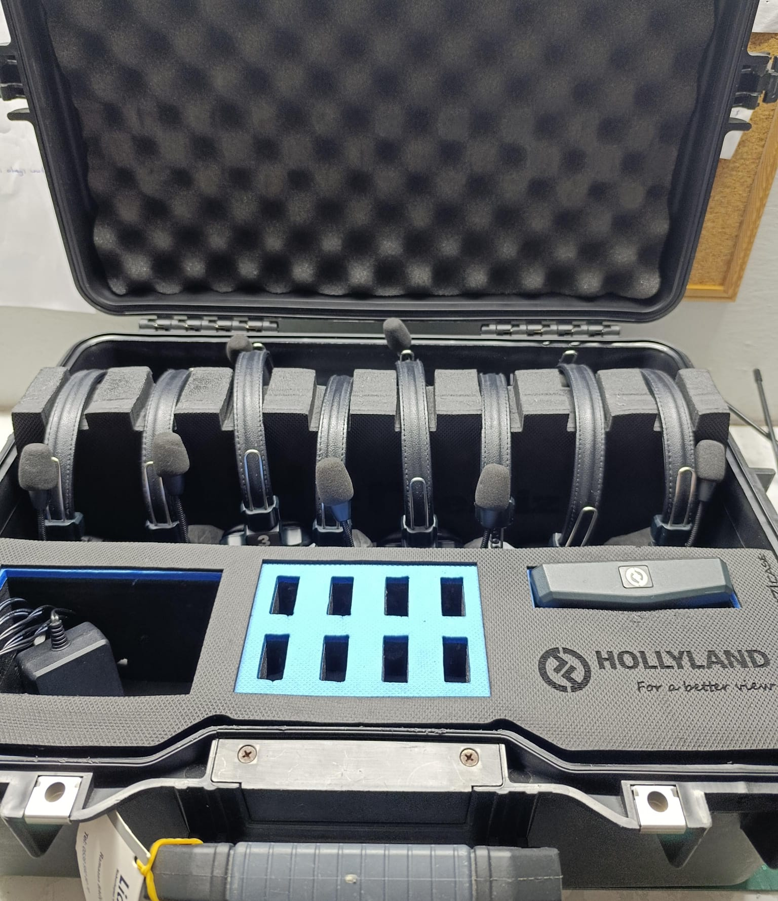

İNTERCOM SİSTEMLERİ
Setlerde ve Canlı Yayınlarda Profesyonel İletişim Çözümü
İntercom Nedir?
İntercom sistemleri, standart telsizlerin aksine "Full-Duplex" haberleşme sağlar. Yani aynı anda hem konuşabilir hem de dinleyebilirsiniz; butona basmanıza gerek kalmaz. Özellikle film setlerinde yönetmen, ses ekibi ve kamera operatörleri arasındaki koordinasyonu sessiz, hızlı ve eller serbest (hands-free) bir şekilde yönetmek için vazgeçilmezdir.

Kablosuz Kulaklık Setleri

Merkezi İstasyon Üniteleri

Bel Tipi Alıcı Üniteler